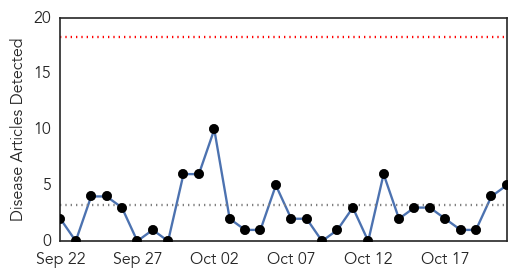
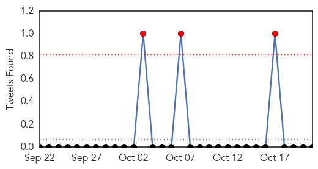
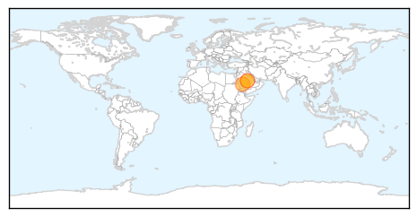
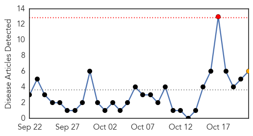
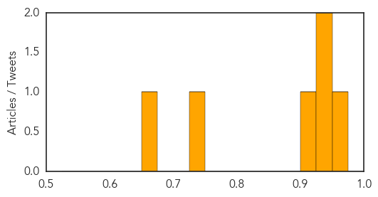

MERS
30-Day Web Trend
0 alerts, 0 warnings

30-Day Twitter Trend
2 alerts, 0 warnings

Article Locations
Article Confidences

Top Articles:
Top Tweets:
-
No tweets found for Oct 21, 2014
Meningitis
30-Day Web Trend
1 alerts, 1 warnings

30-Day Twitter Trend
0 alerts, 0 warnings

Article Locations

Article Confidences
Top Articles:
- 0.955
- KGH doctors gear up to handle epidemics
- 0.936
- While U.S. frets over Ebola, Meningitis B kills at least 3 college students this year
- 0.931
- Jackson school officials say student does not have meningitis
- 0.920
- MENINGITIS SAME AS AT UCSB
- 0.732
- Ethiopia launches Meningitis A campaign
- 0.656
- KSWO, Lawton, OK- Wichita Falls, TX: News, Weather, Sports. ABC, 24/7, Telemundo -
Top Tweets:
-
No tweets found for Oct 21, 2014